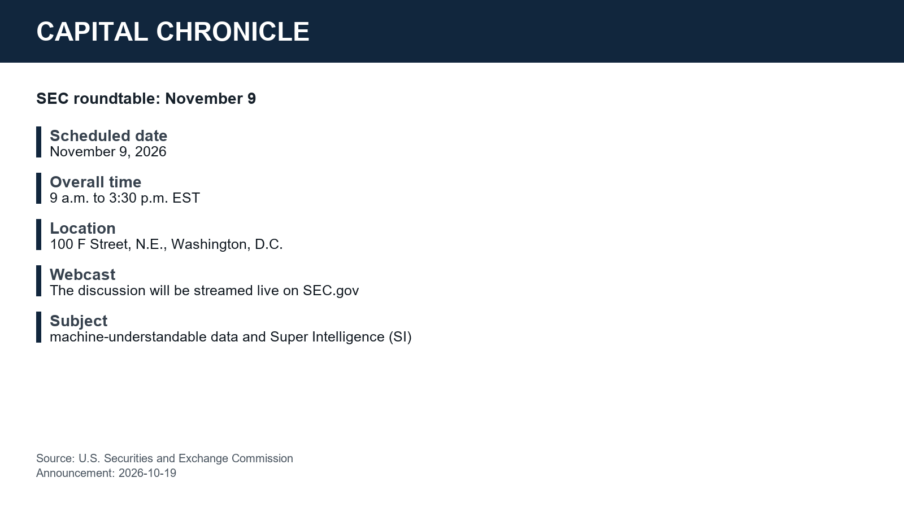

The SEC has announced a November 9 public roundtable on machine-understandable data and Super Intelligence (SI), including their uses, risks and costs. For readers, the distinction is between hearing evidence about those uses and assuming a discussion amounts to a policy change.
What the SEC has announced
In its October 19 announcement, the Securities and Exchange Commission scheduled the roundtable for November 9, 2026, from 9 a.m. to 3:30 p.m. EST at its headquarters, 100 F Street, N.E., Washington, D.C.
The event will be open to the public, although in-person capacity may be limited and visitors will face security checks. The SEC says the discussion will be streamed live on SEC.gov, with a recording available later.

What to listen for
The SEC says feedback will help staff understand how the market and investing public use machine-understandable data for SI solutions, and how the Commission might better facilitate SI.
Listen for concrete examples of use, a clear account of risks and costs, and any stated next steps. These are watchpoints for the discussion, not promised agenda items or conclusions.
What this does not establish
The countercase is that this may remain a listening exercise. The announcement describes a discussion and a request for feedback; it supplies no quantified benefits, cost estimates or adopted policy.
The SEC's chief economist, Joshua White, put high-quality information at the center of the announcement. Whether the discussion produces useful evidence on that subject remains to be seen.
Analysis, not financial advice. Readers decide whether to trade.
Analysis, not financial advice.